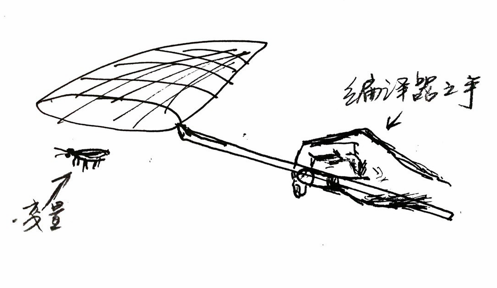
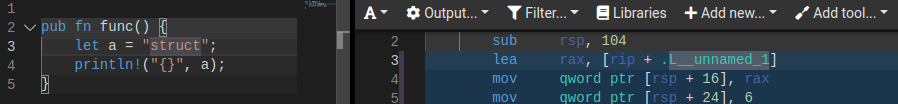
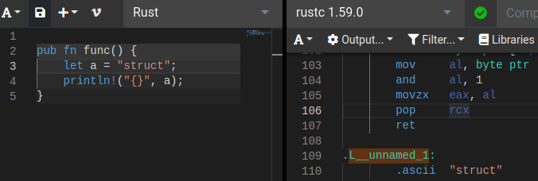

Rust Lifetime
这篇文章出自 Rust 通识, 篇幅太长了所以独立出来
基本概念
- Lifetime 只针对引用，即加了
&前缀的变量 - Ultimately, lifetime syntax is about connecting the lifetimes of various parameters and return values of functions.
- Nomicom(Mysterious and often incomprehensible yet seemingly wise): Lifetimes are named regions of code that a reference must be valid for.
- 除了 region, 还有另外一种表达: span. "The span of the code where the reference may be used".
- 如果一个实体(函数，struct)，包含了引用，那么这个实体的生命周期必须至少跟那引用的生命周期一样长
- 生命周期结束的可能性：
- 引用所在的 block，你可以这么考虑，x86 calling convention 中，函数入栈的时候，任何地方声明的本地变量其实都在栈帧指针附近，所以这个帧的任何东西都能引用本地变量，不管是否符合语法，因此，本地变量的生命周期就是帧的生命周期，也就是持续了整个 block
- NLL: non lexical lifetime, 变量的声明周期从声明开始，到最后一次使用结束，当前的编译器(rustc 1.55.0 (c8dfcfe04 2021-09-06)) 用的就是 NLL
- 我的理解是，所谓 lexical 是指编译的时候，编译器扫描一遍本地变量，把它们安排到帧的前面，这个就是 lexical(relating to the words or vocabulary of a language)，为什么要放在帧的前面呢？变量不放帧里面放哪？对于栈虚拟机，举个例子，很难实现第 10 行声明的变量不和它前面最后一个变量放在一块，因为运算结果也放回栈中，导致细节复杂，因此必须先扫描一遍函数的指令，将所有声明的变量都放在帧的前面。而对于 register-based 虚拟机，调用栈除了放变量和寄存器就不放其他东西，不存储运算结果。因此，不管是栈虚拟机，还是寄存器虚拟机，都将变量放在帧的前面，只不过一个是被迫这么做，一个是自然而然这么做。NLL 是指更精细地检查变量的生命周期，和上述“将变量放在帧前面”不一样。https://stackoverflow.com/a/50253558 说 NLL 应该改名叫 non-lexical borrows，和 lifetime 区分开来，这也就意味着，将变量放在帧的前面，是 lifetime, 或者 lexical lifetime.
'static和任何语言的 static 一样，都是用来表示某个东西存活到程序退出- Lifetime Elision：只要函数有引用，就涉及生命周期，最初版的 Rust 没考虑到生命周期的问题，因此保留了没有生命周期标注，将来 Rust 编译器会智能到消除一切生命周期标注，但现在还不行，还需要程序员手动标注。
Rust 管理 Lifetime 的手段：
- borrow checker, 发生在编译期
Unbounded Lifetimes：
- Given a function, any output lifetimes that don't derive from inputs are unbounded.
什么是捕捉
error[E0759]: `target` has lifetime `'a` but it needs to satisfy a `'static` lifetime requirement
--> proc/src/lib.rs:28:5
|
23 | fn tag<'a, T, P>(mut parser: P, target: &'a str) -> impl FnMut(IntoIter) -> Result<T>
| ------- this data with lifetime `'a`...
...
28 | / move |token: IntoIter| -> Result<T> {
29 | | let t = parser(token)?;
30 | | if t.to_string() == target {
31 | | Ok(t)
... |
34 | | }
35 | | }
| |_____^ ...is captured here...
|
note: ...and is required to live as long as `'static` here
--> proc/src/lib.rs:23:53
|
23 | fn tag<'a, T, P>(mut parser: P, target: &'a str) -> impl FnMut(IntoIter) -> Result<T>
| ^^^^^^^^^^^^^^^^^^^^^^^^^^^^^^^^^
help: to declare that the `impl Trait` captures data from argument `target`, you can add an explicit `'a` lifetime bound
|
23 | fn tag<'a, T, P>(mut parser: P, target: &'a str) -> impl FnMut(IntoIter) -> Result<T> + 'a
| ^^^^
For more information about this error, try `rustc --explain E0759`.
error: could not compile `macros` due to previous error
可以看到，编译器认为 target: this data with lifetime 'a is captured here
这就很操蛋，Rust 没有文档讲什么叫做 capture，除了闭包。闭包有个参数列表 |...| , 编译器会决定到底是通过 &T, &mut T, 还是 T 来给闭包捕捉变量
所谓捕捉是指，在闭包中使用但并未在闭包中定义的变量需要去闭包所在的环境中找对应的数据来源，比如
let print = println!("color = {}", color);
编译器要去 print 所在的上下文中查找 color, 找到之后，把它捕捉到 println 参数中

首先尝试 &T, 如果变量在闭包中有改动，则 &mut T, 如果闭包要用到值传递，则 T
比如：
fn main() {
let a = 2;
let mover = move |t| -> i32 {
t
};
let do_sth = || {
mover(a);
};
do_sth();
}
do_sth 调用 mover， mover 移动 a， 为什么呢，因为前面的 move 标识让 closure "take ownership of captured variables"。
函数的捕捉
了解闭包的捕捉之后，我们不难想象对于函数而言，唯一的捕捉只能发生在调用 (invocation) 的时候，比如对于 some_func(a); ，编译器去找 a, 放到函数内部，by reference 还是 by mutable reference 或 value 都由函数定义说了算。
搞错了，函数没有捕捉
源代码如下：
fn tag<'a, T, P>(mut parser: P, target: &'a str) -> impl FnMut(IntoIter) -> Result<T>
where
P: FnMut(IntoIter) -> Result<T> + 'a,
T: ToString,
{
move |token: IntoIter| -> Result<T> {
let t = parser(token)?;
if t.to_string() == target {
Ok(t)
} else {
bail!("tag mismatch")
}
}
}
仔细对比编译错误，发现箭头发生在函数定义中的闭包的最后一个括号。所以我们搞错了，函数没有捕捉，只有闭包才有捕捉，闭包捕捉了 target，by reference，因为 == 不需要拷贝(参考 https://doc.rust-lang.org/std/cmp/trait.PartialEq.html ,eq 接口)。
那也就是说，其实捕捉跟生命周期没什么关系，接下来看如何解读报错
解读错误
首先， target has lifetime a but it needs to satisfy a 'static lifetime requirement.
看 the book 怎么说（https://doc.rust-lang.org/book/ch10-03-lifetime-syntax.html#the-static-lifetime）
But before specifying 'static as the lifetime for a reference, think about whether the reference you have actually lives the entire lifetime of your program or not. You might consider whether you want it to live that long ...
意思是 'static 可以解决一切问题。关键是如果你开始不声明 &'static T, 也没用，而且这么做浪费了 ELF 空间，变量被迫存在 .data, .rodata, .bss (是不是这样？标注了 'static 就要放在栈之外的地方？不是。'static 是 programmer 给编译器的保证，但 programmer 可能是错的，但编译器有时候选择相信 programmer, 特别是在引用这方面，或者说，让 programmer 去承担某个责任，因为编译器没有能力去判断引用的生命周期)
回到现实，我调用这个函数的形式是：
let token = item.into_iter();
let _ = tag(ident, "struct")(token);
"struct" 这个字符串的引用传到 tag(), 被里面的闭包捕捉，只要 "struct" 还在, 闭包都能使用，可以看出 "struct" 其实是 'static
All string literals have the
'staticlifetime -- The Static Lifetime


但是编译器太蠢所以它不知道 target 能活这么久，所以需要给返回值，即一个 closure, 手动标注上一个生命周期，至少和 target 的一样长。
同时可以看到编译器给出了解释：
help: to declare that the
impl Traitcaptures data from argumenttarget, you can add an explicit'alifetime bound
那么 tag() 的返回类型就是 impl FnMut(IntoIter) -> Result<T> + 'a，这是什么语法？
'a 的语法
Validating References with Lifetimes 没解释 + 'a, 看到 + 会让人想到泛型的类型叠加：Specifying Multiple Trait Bounds with the + Syntax
假设 impl FnMut(IntoIter) -> Result<T> 是 impl traitA, 那么 impl FnMut(IntoIter) -> Result<T> + 'a 等于 impl traitA + 'a, 和我刚给出的连接的例子一样
pub fn notify(item: &(impl Summary + Display))
那么问题是 'a 是一个 trait bound 么？ 看 Trait and lifetime bounds
语法：
TraitBound :
?? ForLifetimes? TypePath
| ( ?? ForLifetimes? TypePath )
所以 'a 是一个 trait bound
结论
到这，我们应该能够完全理解这段代码的每一个细节，了解生命周期在里面如何标注的，这个例子的输出携带了对变量 target 引用，那么就要确保引用的时候 target 没被回收。这很可能是编译器不够聪明导致，因为只要检测到 ”struct“ 是全局变量，返回的闭包是某种程度上也是 'static，但如果 target 只是一个本地局部变量的引用，就没用 'static，所以也许是为了保持一种形式统一，目前在所有场景之下都需要手动标注。
fn tag<'a, T, P>(mut parser: P, target: &'a str) -> impl FnMut(IntoIter) -> Result<T> + 'a
where
P: FnMut(IntoIter) -> Result<T> + 'a,
T: ToString,
{
move |token: IntoIter| -> Result<T> {
let t = parser(token)?;
if t.to_string() == target {
Ok(t)
} else {
bail!("tag mismatch")
}
}
}
Resources
History
- 20210329123415